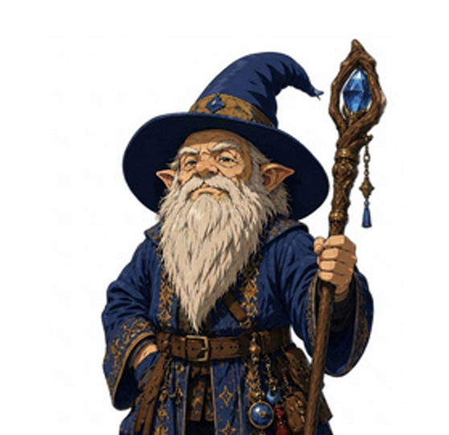

Adepto de Ritual
Permite conjurar como Ritual qualquer magia que esteja em seu livro de magias e possua esse marcador, sem a necessidade de tê-la preparada, desde que você consulte o livro durante a conjuração.

Nenhum item encontrado.
Você cria um som ou uma imagem de um objeto no alcance da magia que permanece pela duração da magia. Veja as descrições abaixo para os efeitos de cada um. A ilusão encerra se você conjurar esta magia novamente.
Se uma criatura executar uma ação Analisar para examinar o som ou a imagem, ela pode determinar que é uma ilusão com um teste bem-sucedido de Inteligência (Investigação) contra a CD para evitar sua magia. Se a criatura perceber a ilusão pelo que ela realmente é, a ilusão se torna tênue para essa criatura.
Som. Se você criar um som, o volume pode variar de um sussurro a um grito. Pode ser sua voz, a voz de outra pessoa, o rugido de um leão, o bater de tambores ou qualquer outro som que você escolher. O som continua ininterrupto pela duração da magia, ou você pode criar sons distintos em diferentes momentos antes que a magia termine.
Imagem. Se você criar a imagem de um objeto, como uma cadeira, pegadas enlameadas ou um pequeno baú, ela não pode ter dimensões superiores a um cubo de 1,5 metro de lados. A imagem não pode gerar som, luz, cheiro ou qualquer outro efeito sensorial. A interação física com a imagem demonstra que se trata de uma ilusão, pois os objetos podem atravessá-la.
Uma mão espectral flutuante aparece em um ponto que você escolher no alcance da magia. A mão permanece pela duração. A mão desaparece se estiver a mais de 9 metros de você ou se você conjurar esta magia novamente.
Ao conjurar a magia, você pode usar a mão para manipular um objeto, abrir uma porta ou um recipiente destrancado, guardar ou recolher itens de recipientes abertos, ou despejar o conteúdo de um frasco.
Como uma ação Usar Magia em seus próximos turnos, você pode controlar a mão novamente. Como parte dessa ação, você pode mover a mão até 9 metros. A mão não pode atacar, ativar itens mágicos ou carregar mais de 5 quilos.
Um feixe congelante de luz azul-esbranquiçada parte em direção a uma criatura no alcance da magia. Realize um ataque mágico à distância contra o alvo. Se acertar, a criatura sofre 1d8 pontos de dano Gélido e seu Deslocamento é reduzido em 3 metros até o início do seu próximo turno.
Aprimoramento de Truque. O dano aumenta em 1d8 quando você atinge os níveis 5 (2d8), 11 (3d8) e 17 (4d8).
Canalizando o frio da sepultura, realize um ataque mágico corpo a corpo contra um alvo no alcance da magia. Em caso de acerto, o alvo sofre 1d10 pontos de dano Necrótico e não pode recuperar Pontos de Vida até o final do seu próximo turno.
Aprimoramento de Truque. O dano aumenta em 1d10 quando você atinge os níveis 5 (2d10), 11 (3d10) e 17 (4d10).
Guiado pelo lampejo de uma intuição mágica, você realiza um ataque com a arma usada na conjuração da magia. O ataque usa seu atributo de conjuração para as jogadas de ataque e dano em vez de usar Força ou Destreza. Se o ataque causar dano, ele pode ser Radiante ou do tipo de dano normal da arma, à sua escolha.
Aprimoramento de Truque. O ataque causa dano Radiante adicional quando você atinge os níveis 5 (1d6), 11 (2d6) e 17 (3d6).
Você aponta para uma criatura à sua vista e no alcance da magia. O alvo deve ser bem-sucedido em uma salvaguarda de Sabedoria ou sofre 1d8 pontos de dano Necrótico. Caso tenha perdido algum Ponto de Vida, sofre 1d12 pontos de dano Necrótico.
Aprimoramento de Truque. O dano aumenta para 2d8 ou 2d12 no nível 5, 3d8 ou 3d12 no nível 11 e 4d8 ou 4d12 no nível 17.
Você dispara um raio esverdeado em uma criatura no alcance da magia. Realize um ataque mágico à distância. Em caso de acerto, o alvo sofre 2d8 pontos de dano Venenoso e fica Envenenado até o final do seu próximo turno.
Usando um Espaço de Magia de Círculo Superior. O dano aumenta em 1d8 para cada círculo acima de 1.
Você faz com que você mesmo, incluindo roupas, armaduras, armas e outros pertences, pareça diferente até que a magia termine. Pode parecer 30 centímetros mais baixo ou mais alto e mais pesado ou mais leve. Você deve adotar uma forma com a mesma disposição básica de membros que você.
As mudanças falham em uma inspeção física. Para descobrir o disfarce, uma criatura deve executar a ação Analisar e ser bem-sucedida em um teste de Inteligência (Investigação) contra a CD para evitar sua magia.
Você cria um fragmento de gelo e o arremessa. Em caso de acerto, o alvo sofre 1d10 de dano Perfurante. O fragmento explode; o alvo e cada criatura a até 1,5 metro devem ser bem-sucedidos em uma salvaguarda de Destreza ou sofrem 2d6 de dano Gélido.
Usando um Espaço de Magia de Círculo Superior. O dano Gélido aumenta em 1d6 para cada círculo acima de 1.
Esta magia cria uma força Invisível, sem mente, disforme e Média que executa tarefas simples ao seu comando. O servo tem CA 10, 1 Ponto de Vida e Força 2, e não pode atacar.
Como uma Ação Bônus, você pode comandá-lo mentalmente a se mover até 4,5 metros e interagir com um objeto. Ele pode buscar, limpar, consertar, dobrar roupas, acender fogueiras, servir comida e bebidas. Se a tarefa o mover a mais de 18 metros de você, a magia se encerra.
Você cria uma Esfera de névoa de 6 metros de raio centrada em um ponto no alcance da magia. A Esfera é Totalmente Obscurecida e permanece até a duração terminar ou até que um vento forte a disperse.
Usando um Espaço de Magia de Círculo Superior. O raio aumenta em 6 metros para cada círculo acima de 1.
Você toca uma criatura voluntária que não está usando armadura. Até que a magia termine, a CA base do alvo se torna 13 mais o modificador de Destreza. A magia se encerra se o alvo vestir uma armadura.
Pela duração da magia, você entende o significado literal de qualquer idioma que ouça ou veja escrito. Você também entende qualquer escrita que veja, mas deve tocar a superfície. Leva cerca de 1 minuto para ler uma página. A magia não decodifica símbolos ou mensagens secretas.
Você libera uma onda de energia estrondosa. Cada criatura em um Cubo de 4,5 metros originado em você realiza uma salvaguarda de Constituição. Se falhar, sofre 2d8 de dano Trovejante e é empurrada a 3 metros; em caso de sucesso, sofre metade. Objetos soltos são empurrados e o estrondo é audível a até 90 metros.
Usando um Espaço de Magia de Círculo Superior. O dano aumenta em 1d8 para cada círculo acima de 1.
Uma fina camada de chamas parte de você. Cada criatura em um Cone de 4,5 metros realiza uma salvaguarda de Destreza, sofrendo 3d6 de dano Ígneo se falhar ou metade em caso de sucesso. Objetos inflamáveis entram em combustão.
Usando um Espaço de Magia de Círculo Superior. O dano aumenta em 1d6 para cada círculo acima de 1.
Pela duração da magia, você pode compreender e se comunicar verbalmente com Feras, e pode usar com elas qualquer opção de perícia da ação Influenciar. A maioria oferece pouca informação, mas pode falar sobre áreas vizinhas e monstros percebidos no último dia.
Permite conjurar como Ritual qualquer magia que esteja em seu livro de magias e possua esse marcador, sem a necessidade de tê-la preparada, desde que você consulte o livro durante a conjuração.
Permite recuperar espaços de magia gastos ao estudar seu livro durante um Descanso Curto. A soma dos círculos recuperados pode ser de até metade do seu nível de Mago, arredondado para cima, limitada a espaços de no máximo 5º círculo, recarregando após um Descanso Longo.
Concede a capacidade de conjurar magias de Mago utilizando Inteligência como atributo. Você mantém um livro de magias com suas magias conhecidas e define a lista de magias preparadas após um Descanso Longo, podendo usar um Foco Arcano ou o livro como foco de conjuração.
Nada relevante.
Você tem Visão no Escuro com um alcance de 18 metros.
Você tem Vantagem em salvaguardas de Inteligência, Sabedoria e Carisma.
Autoexplicativo.
Inteligência.
Nenhuma proficiência.